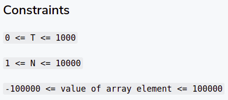
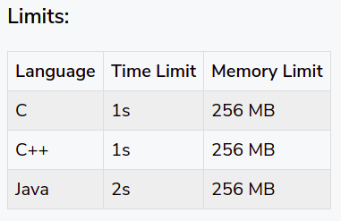

Solving a DSA (Data Structures and Algorithms) problem can be pretty tough. This article should help you understand how to go about solving a DSA problem on websites like Leetcode, InterviewBit, Geeksforgeeks, workat.tech. It might also help you effectively start your competitive programming journey.
These are the steps that you should follow:
- Understand the question completely.
- Get an estimate of the required complexity.
- Come up with edge cases based on the constraints.
- Come up with a brute-force solution. Verify if it will pass.
- Optimize, verify and repeat this step.
- Dry-run your solution on the sample tests and edge cases.
- Code and test with the sample tests and edge cases.
- Submit. Debug and fix, if the solution does not work.
Assumption: You know the data structures and algorithms required for a particular problem and you also know how to implement the required DSA.
Note that you do not need to use this as a checklist for every problem. Start following this and you will get used to it with practice. After that, you would be able to do most of the steps in a few seconds or with a glance.
Let's look at each of the steps in detail.
Disclaimer: It is a pretty big article. Make sure to bookmark it and reference it from time to time.
Understand the question completely
Look at the question and try to understand it completely. Make sure to run through the examples to verify that your understanding of the problem is correct. How to do that? The input should give the required output. You should be able to verify that.
Write down stuff on paper if required. You need to be completely sure that you understand the problem before moving ahead.
Get an estimate of the required complexity
Look at the constraints and time limit. This should give you a rough idea of the expected time and space complexity. Use this step to reject the solutions that will not pass the limits. With some practice, you will be able to get an estimate within seconds of glancing at the constraints and limits.
Example
 For an estimate, ~108 operations will take:
- 1s in C/C++
- 2s in Java
- 4s in Python
Most DSA problems will have the above time limits as well.
Learn how to estimate the required time complexity.
Example: For the above constraints and limits, anything worse than O(n) won't pass.
How to compute the number of operations?
Let's say that there are T test cases. You want to verify if an O(n2) complexity solution would work for each test case. Then, total operations would be of the order of T*n*n.
Take the largest values of T and n from the constraints and put them to the above equation.
There could be three scenarios here:
- The computed value is way lesser than 108: your solution will most likely pass.
- The computed value is very close to 108: your solution has some chance of passing. Can you optimize it further?
- The computed value is much more than 108: your solution has a high chance of getting TLE (Time Limit Exceeded). Optimize it.
Example
Consider the above example. T <= 1000 and n <= 10000.
- O(n2) Solution: T*n*n => 1010 which is much greater than 108. Won't pass.
- O(n) solution: T*n => 10000*1000 => 107 which is much lesser than 108. We can be pretty sure that an O(n) solution would pass.
How to compute the required memory?
Are you creating a multi-dimensional array? What will be the maximum capacity of the array?
Let's say that we are creating a n*n int array. Considering that int takes 8 bytes. An n*n int array would take 8*n*n bytes or (8*n*n)/1024/1024 MBs. If the maximum value of n is 1000 then your solution would need ~8 MBs. Make sure that your arrays are getting freed after each test case. Create block-scoped arrays or clear and use the same array variables to do that.
If you see that your solution is going to take more memory than required for some constraint value then you need to look at how to optimize the required memory.
Come up with edge cases
This is one of the most important stages. Most people miss this and get WA (wrong answers).
In most problems, you would be provided with sample input and output with which you can test your solution. These tests would most likely not contain the edge cases. Edge cases are the boundary cases that might need additional handling. Before jumping on to any solution, write down the edge cases that your solution should work on.
What are the edge/boundary cases and how to find them?
Boundary cases are the test cases that you can create based on the start and end boundary of the different constraint variables.
Example
In the above constraints, the boundary cases are:
- T (No. of test cases per run): 0, 1, and 1000
- N (No. of array elements per test): 1, 2, and 10000
- Array element value: -100000 and 100000. Should also test on -1, 0, and 1.
Create test cases (input and expected output) based on these values.
Note: Test cases mean both input and expected output.
There are different types of cases that you can create. It will be based on the use case. Learn the patterns and take care of them as you miss them on different problems.
Examples: Let's say that the array elements can contain duplicates. Make sure to take a small test case with duplicates.
Note: It is not practical to create tests for large input sizes (T or N values) so avoid those if they are very big. Creating tests for large array element values is easy and so definitely create those.
Come up with a brute-force solution
Come up with a solution that solves this problem correctly. It should not be the most optimal one. This solution is the one that you can come up with in less than a minute.
When you start practicing DSA, it would most likely be an exponential or polynomial solution. With sufficient practice, your brute force solution would also be pretty optimal and close to the required solution.
This is generally not the solution you are going to code.
Steps:
- Try to come up with a correct solution as soon as possible.
- Dry run your solution on the sample test cases to verify if your solution is correct.
- Verify if your solution is optimal based on the time and memory limits. Do this by computing the approx number of operations based on the constraints. If it will pass then this is the required solution.
- Even if it is passing, give a minute to see if you can think of a more optimal solution.
Optimize your current solution (Repeat until required optimal solution)
Optimize your current solution if it is not going to pass based on the constraints and limits. This is one of the hardest parts of solving the problem. It gets easier with practice and comfort in the required DSA.
If you've already computed the estimated time complexity, you can easily accept/reject the optimization ideas that come up. You would generally come up with an optimal solution after multiple iterations.
For every optimization that you come up with, compute the time and space complexity of your solution and see if it would pass. Make sure that every optimization is sending you closer to a solution that will pass the limits.
The estimated complexity should give you certain optimization ideas in form of patterns that you learn with practice.
Examples
Current Solution: O(n).
Estimated Complexity: O(log n) or O(sqrt(n))
- Is the array sorted?
- If yes, think binary search.
- If not, can you think of other ways to reduce the search space/iterations?
Current Solution: O(n2)
Estimated Complexity: O(n) or O(log n)
- Is the array sorted?
- If yes, think two-pointers or binary search.
- If not, can you sort it and use the above?
- If not, do you think using space through hashing will help reduce the time?
- If not, do you see subproblems where you use DP?
- If not, think of other optimizations.
Current Solution: O(n2)
Estimated Complexity: O(n log n) or O(n)
- Is the array sorted?
- If yes, think two-pointers or binary search for each iteration.
- If not, can you sort it and use the above?
- If not, do you think using space through hashing will help reduce the time?
- If not, do you see subproblems where you use DP?
- If not, think of other optimizations.
Current Solution: O(2n)
Estimated Complexity: O(n2) or O(n log n) or O(n)
- Same steps as above.
- The optimal solution would most likely be through DP in this case.
Note that coming up with the above steps would become intuitive with practice. Once you come up with an optimized solution, dry run your solution on the sample test cases to verify if your solution is correct.
Dry-run the optimal solution on the edge cases
Once you have an optimal solution that you are ready to code, make sure to dry run your solution on the sample tests and the edge cases that you came up with earlier.
Before you write the code, you should have a correct, optimal solution ready which should pass on all the test cases. Writing code is just about converting logic to code that a computer can understand.
Code and test with the edge cases
- Convert your solution to code. Make sure that your code is as expected based on the logic.
- Quickly dry run your code on the test cases (incl. edge cases). You can dry run by putting comments on each line of the code with the current values for each iteration/function call. Do it without a debugger as you're not going to get a debugger during an interview.
- Test with custom input with the test cases (incl. edge cases) and verify the output.
- Fix your code if any of it is failing.
Submit. Debug and fix, if the solution does not work
If your solution is working with the test cases (sample and edge cases), submit.
If all the system test cases pass then awesome. Move on to the next problem.
If not then debug and fix.
Common issues:
TLE (Time Limit Exceeded)
I am assuming that you computed the time complexity of your solution and it should have passed based on the constraints and limits but still got TLE.
- There is most likely an infinite loop or recursion with a missing base case.
- If that is not the case then verify if your code has the time complexity that you initially calculated.
- If none of that is the issue, try to reduce constant operations inside the loop/function call.
Note: Most online platforms have liberal time limits to allow a good amount of constant operations in each iteration to pass and so this should generally not be an issue.
WA (Wrong Answer)
- The most likely reason is missing edge cases. Think of more edge cases and test with the custom input. If the platform provides the failing cases then compare it with the output that your code gives on those test cases and try to debug.
- Make sure that you are not printing anything apart from what is required.
- Make sure that there are no extra/missing lines or spaces.
SIGSEGV (Segmentation Fault)
- The most likely reason is accessing array/string index outside its range.
- Using too much memory in some languages. Most likely due to a non-terminating recursion.
- Uninitialized or incorrectly initialized pointers.
NZEC (Non-Zero Error Code)
- The most likely reason is not catching exceptions.
- In C/C++, not returning 0 from the main method.
I hope that you found this article helpful. Make sure to bookmark it and reference it from time to time. It might seem a bit overwhelming. Most of these should become part of your muscle memory once you start using them regularly. With practice, you would be able to do most of the steps in a few seconds or with a glance.
---
Please reach out to me on WhatsApp at 9732130450 if you have any questions.